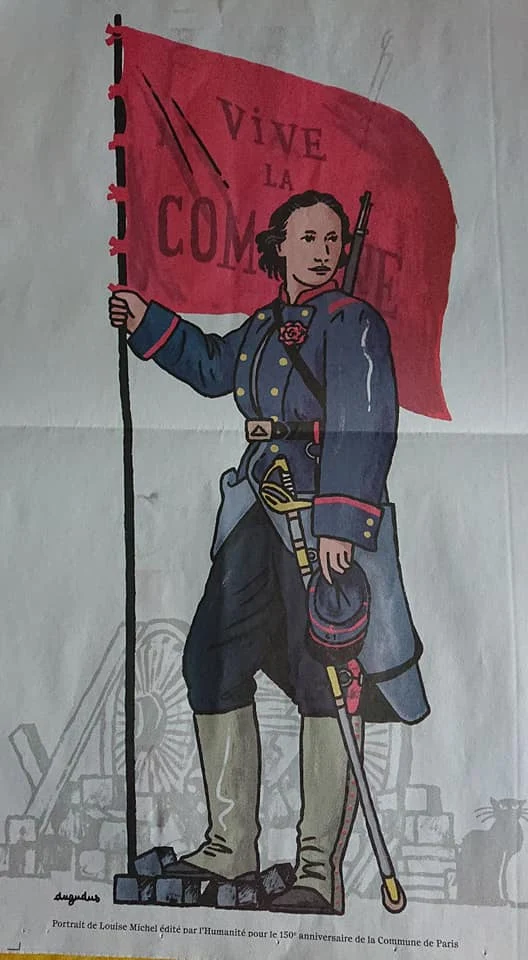

Publication d’archives
150 ans après "La Commune n'est pas morte".
Date indiquée par Facebook · 29 mai 2021
Texte conservé avec la publication
Contexte du dossier
Le 18 mars 2021, pour les 150 ans de la Commune, la page recommande les articles de L’Humanité et les portraits de communardes et communards dessinés par Dugudus dans le projet Nous la Commune. Le 29 mai, elle évoque la montée au mur des Fédérés. Dans les deux textes revient la parole d’Eugène Varlin sur l’instabilité d’un ordre où l’on peut mourir de faim devant l’abondance. La mémoire est ici tournée vers une contradiction toujours politique : les institutions ne garantissent pas l’égalité réelle si les richesses et le pouvoir restent concentrés entre quelques mains.

Sources
Archive rouge · export Facebook · AR-0002-FB-02030
À lire aussi · Marcel Paul, au-delà d’un nom de parking